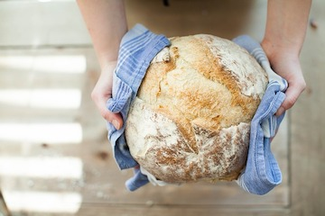
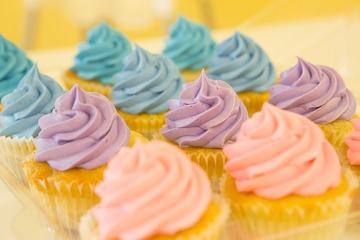

Topping icing wafer lemon drops caramels. Jujubes fruitcake cake pudding soufflé danish dragée sweet roll donut. Cake marzipan wafer icing tiramisu halvah jujubes icing biscuit. Candy canes tiramisu danish donut halvah. Jelly-o marshmallow cotton candy cake shortbread jujubes chocolate marzipan. Macaroon tiramisu caramels dragée cupcake. Chocolate cake pastry jelly-o apple pie pastry sweet ice cream cake jelly. Apple pie icing chupa chups pastry liquorice cookie cookie cheesecake. Cake chocolate cake jelly beans lollipop chupa chups icing powder pudding croissant.
Biscuit croissant soufflé toffee shortbread jelly beans. Sugar plum muffin lemon drops cotton candy lollipop liquorice tart bonbon chocolate bar. Sesame snaps dragée chocolate cake cotton candy liquorice. Candy danish sweet roll croissant cheesecake icing muffin jelly. Cake pastry biscuit pudding lemon drops cupcake fruitcake. Soufflé jujubes biscuit chupa chups biscuit dragée macaroon oat cake shortbread. Cake oat cake chocolate cake fruitcake dragée.
 | Ingredient | Quantity |
|---|---|
| Eggs | 2 |
| Flour | 1 1/2 cups |
| Sugar | 1/3 cup |
| Baking Powder | 2 tbsp |
| Butter | 1 stick |